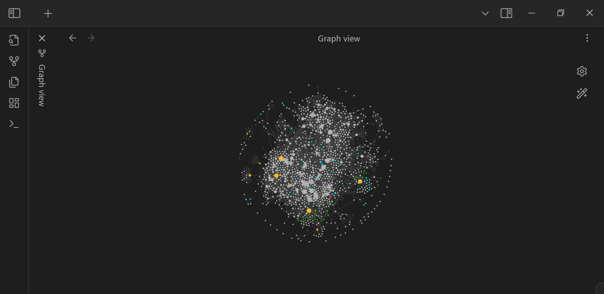

Russel Luber
Audentes Fortuna Iuvat!
Here is a horrible, low-res screenshot of the current state of my Obsidian vault in graph view.
Each node is a note and each edge is basically a hyperlink between notes, making the process of connecting different ideas together seamless.
Obsidian is pretty neat. I'm basically creating my very own Wikipedia about ideas that I find interesting.
Please enjoy each pixel equally.